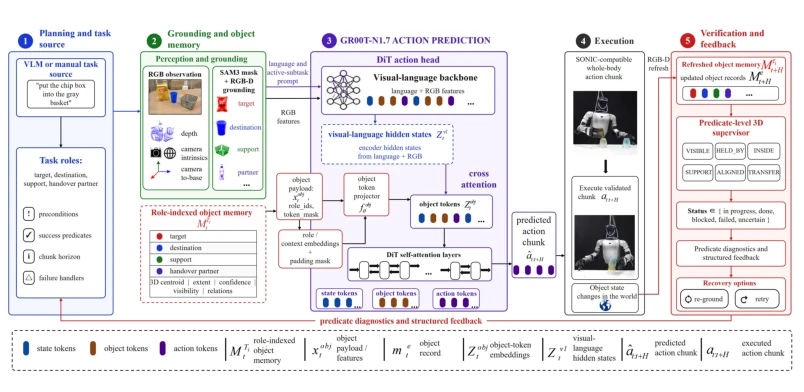
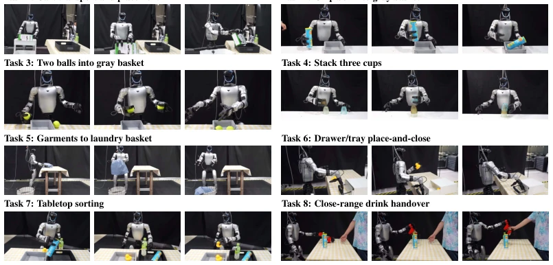

This paper administers a "memory pill" to VLA robots. Traditional VLA robots are like goldfish, forgetting after completing actions, leading to mismatches in object states during long-horizon tasks. The authors developed a POT mechanism that solidifies object states into Tokens, enabling the robot to "remember" where the cup is and whether the grip is stable. As a result, on the Unitree G1, the success rate was directly boosted from 39/80 to 71/80, an improvement magnitude more aggressive than tuning certain large models. However, this approach essentially adds external memory to GR00T without touching the backbone network, belonging to "patchwork" innovation. Relying on SAM3 and depth camera calibration, once occlusion is severe or calibration drifts, this "memory" collapses. Moreover, the verification layer relies entirely on geometric predicates, while semantic understanding still depends on VLMs as a fallback. Overall, it is a practical engineering optimization, but still far from true embodied intelligence; do not expect it to understand the physical intuition behind "placing the cup steadily" like a human.
The core pain point of long-horizon humanoid robot manipulation is "state drift". Existing VLA policies such as π0 [1], Rt-2 [4] typically generate actions based on current visual-language features, but task progress checks are often handled by independent monitoring layers. When the object state during action execution is inconsistent with the state during verification, minor grasping or placement errors can lead to premature subtask switching or erroneous operations [6, 7, 8, 9]. For example, although Being-0 [19] demonstrates modular skills, it still faces the problem of object state loss in long-horizon tasks. This physical-level state inconsistency (Object-state divergence) prevents the robot from maintaining persistent addressing of task objects after moving, occlusion, or contact. Existing methods lack a shared object memory that can both guide action generation and verify physical consequences, leading to frequent "false successes" or invalid recoveries in complex scenarios.
方法Method
整体流程构建了一个“感知 - 动作 - 验证”闭环。首先，POT 从 RGB-D 观测中提取任务相关的实体（如 TARGET, DESTINATION），构建角色索引的对象记忆 $M_{ au_i}^t$，包含 3D 质心、可见性、关系特征等。这些记录被序列化为 Persistent 3D Object Tokens ($x_{obj}^t$)，通过投影层嵌入到 DiT 动作头的自注意力序列中，与状态和动作 Token 拼接。动作专家（GR00T-N1.7）基于这些显式 3D 状态生成全身动作块。执行后，RGB-D 数据刷新同一份对象记忆，几何谓词监督器（Predicate Supervisor）检查物理关系（如距离、包含、支撑）是否满足。若不满足，触发重观察或重试，而非盲目推进。创新点在于：1) 持久化对象 Token 方案，将物理证据绑定到角色槽位；2) 动作头插入机制，不改变主干网络结构；3) 共享记忆闭环，确保动作与验证基于同一份状态。
The overall process constructs a "Perception-Action-Verification" closed loop. First, POT extracts task-relevant entities (e.g., TARGET, DESTINATION) from RGB-D observations, constructing a role-indexed object memory $M_{\tau_i}^t$, containing 3D centroids, visibility, relation features, etc. These records are serialized into Persistent 3D Object Tokens ($x_{obj}^t$), embedded into the self-attention sequence of the DiT action head via a projection layer, and concatenated with state and action Tokens. The action expert (GR00T-N1.7) generates full-body action blocks based on these explicit 3D states. After execution, RGB-D data refreshes the same object memory, and the geometric predicate supervisor (Predicate Supervisor) checks whether physical relations (e.g., distance, containment, support) are satisfied. If not satisfied, it triggers re-observation or retry, rather than blindly advancing. The innovations lie in: 1) Persistent object Token scheme, binding physical evidence to role slots; 2) Action head insertion mechanism, without changing the backbone network structure; 3) Shared memory closed loop, ensuring actions and verification are based on the same state.

Figure 1: POT-VLA system overview. POT maintains a role-indexed object memory Mτi t , serializes it into Persistent 3D Object Tokens for the whole-body action head, and refreshes the same memory after each executed chunk. The predicate supervisor verifies the refreshed memory Mτi t+H with grounded 3D predicates, closing the maintain–act–observe–verify–recover loop over shared object- level physical state.
8 types of real-world tasks were tested on the Unitree G1 humanoid robot, including transport, stacking, sorting, etc. The baseline is the direct GR00T-N1.7 policy, without the POT mechanism. POT-VLA succeeded 71/80, baseline only 39/80, improvement is significant. External comparison on Being-0 [19] alignment tasks, POT-VLA 44/50 outperforms Being-0's 37/50. Ablation experiments show that adding only Tokens yields the largest improvement (15/40 to 31/40), the verifier further corrects (34/40). Under object state perturbations (new instances, layout shifts), POT-VLA has stronger generalization. Failure cases are mostly concentrated in tasks with severe occlusion or ambiguous geometric relations, proving the limitations of geometric predicates when semantics are ambiguous.

Figure 2: Real-world task rollouts. Each task family is shown with three representative frames from the same execution sequence, illustrating the object-centered state changes that POT-VLA conditions on and verifies across transport, placement, stacking, sorting, articulated interaction, deformable- object handling, and handover tasks.